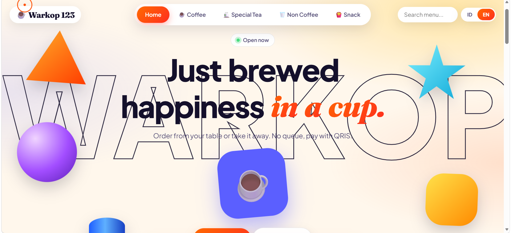

Mengatasi antrean yang tidak terkontrol pada warkop atau kafe melalui sistem pemesanan mandiri berbasis web (In Development).

Warkop 123 dikembangkan untuk menyelesaikan permasalahan klasik di warkop atau kafe lokal, yaitu penumpukan antrean saat memesan menu. Dengan slogan "Just brewed happiness in a cup. Order from your table or take it away. No queue, pay with QRIS", aplikasi ini memungkinkan pelanggan memesan langsung dari meja tanpa harus mengantre panjang.
Frontend Developer & UI/UX Designer — Bertanggung jawab penuh dalam perancangan antarmuka visual yang segar dan modern, serta membangun interaksi logika sistem menggunakan teknologi web murni.
Berdasarkan pengembangan saat ini, aplikasi ini dilengkapi dengan beberapa fitur fungsional penting: